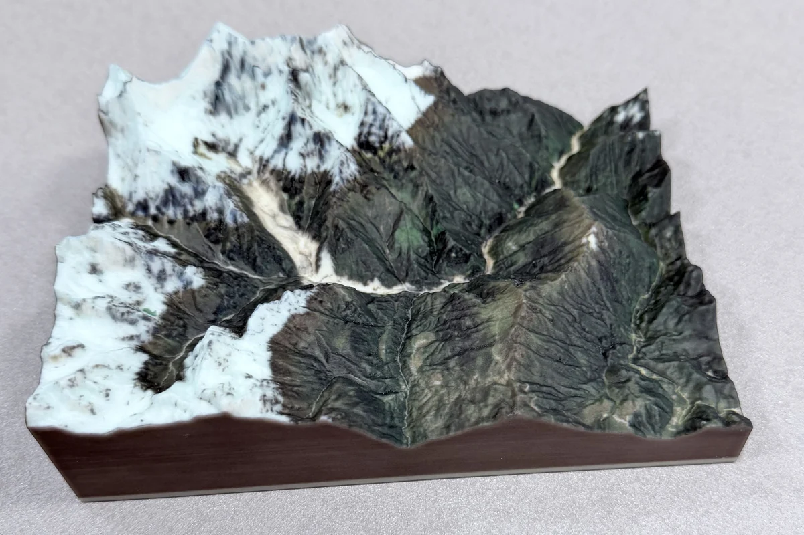
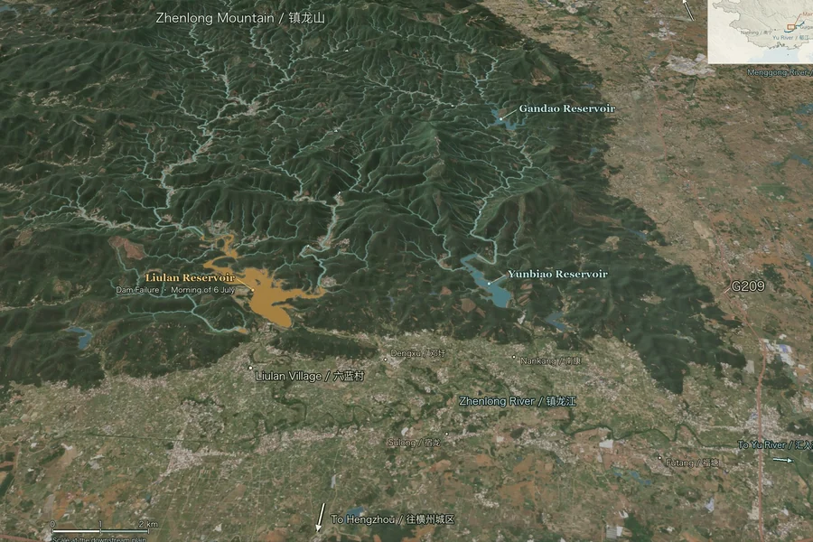
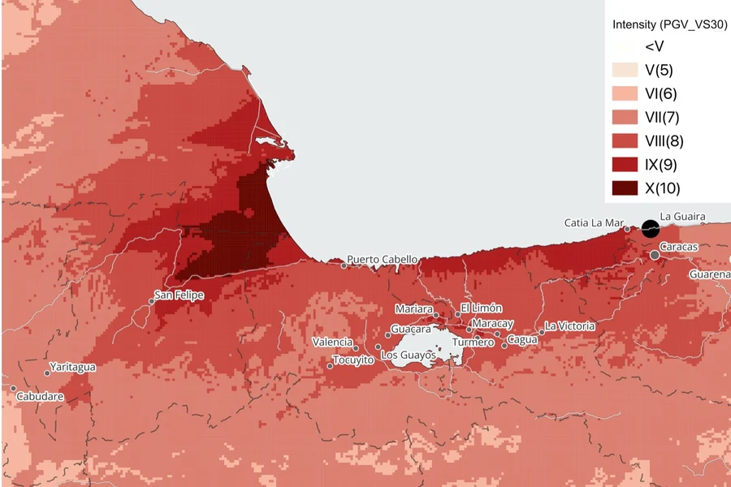

02/ DISASTER CARTOGRAPHY. DISASTER FORENSICS. BLENDER
Mapping Disasters
Where does a hazard begin, and which places does it reach? In Nepal and Guangxi, I trace the paths that debris and water take downslope. In Venezuela, I map how shaking varies across towns and roads.
-

NepalLangtang Lirung ice and rock avalanche
Follow the avalanche from Langtang Lirung down Lende Khola to Gyirong Port. The printed terrain model puts the source slope and the downstream channel in the same view.
-

Guangxi, ChinaLiulan Reservoir dam failure
Trace how runoff from Zhenlong Mountain converges in the channels feeding three reservoirs. The maps and animation follow the water from the hillslopes toward Liulan.
-

VenezuelaMontalbán earthquake intensity
Read preliminary intensity estimates alongside towns and roads around Montalbán. I made this QGIS map as a volunteer exercise for the disaster-response organization Zhuo-Ming.